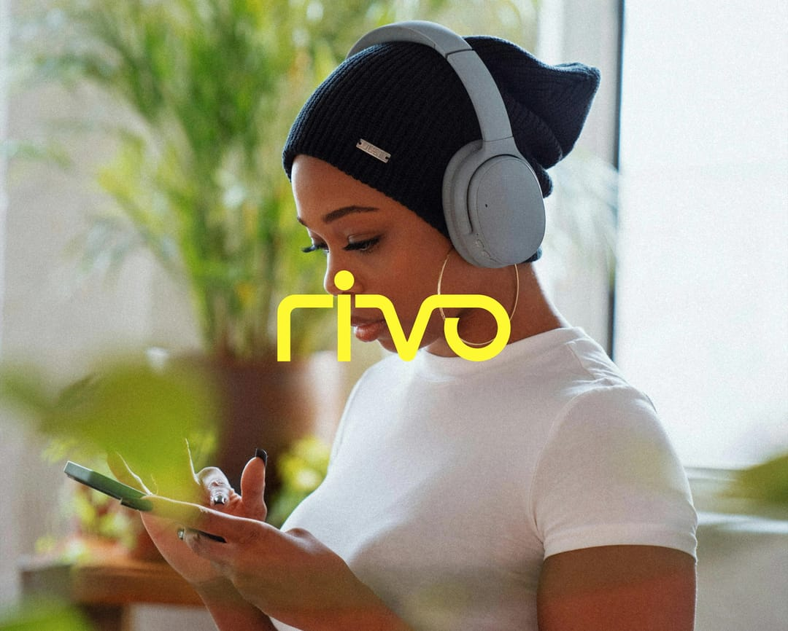
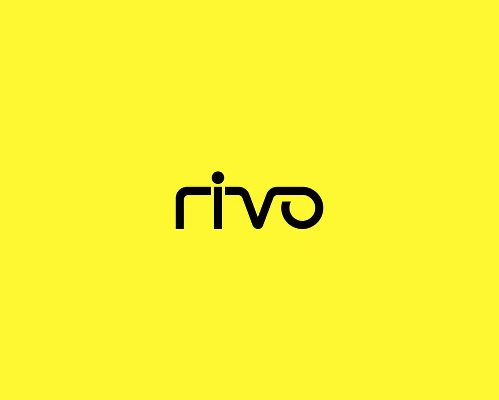
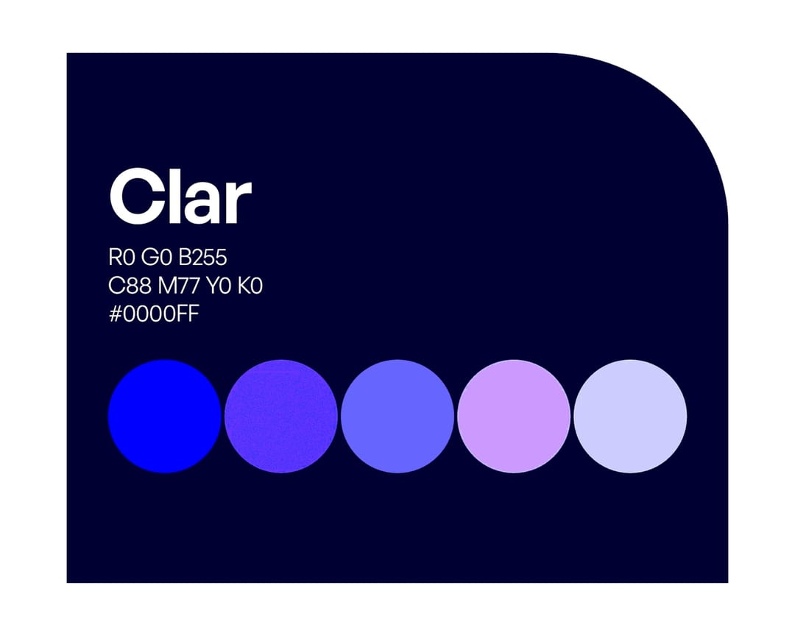
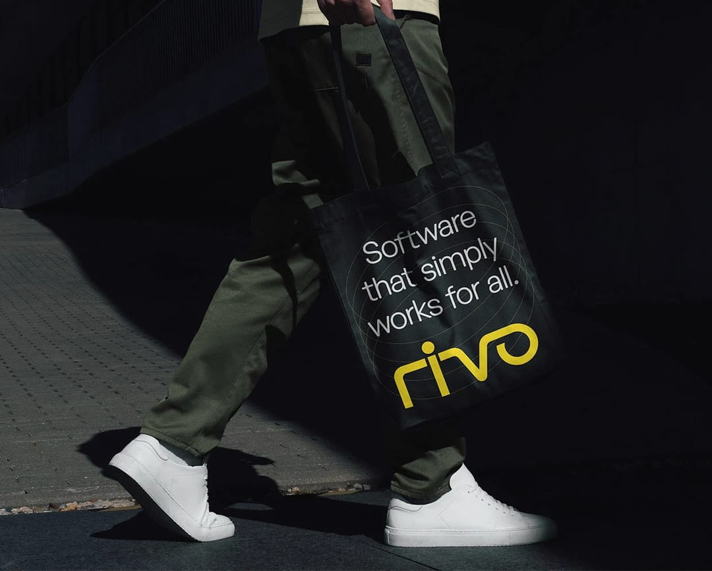
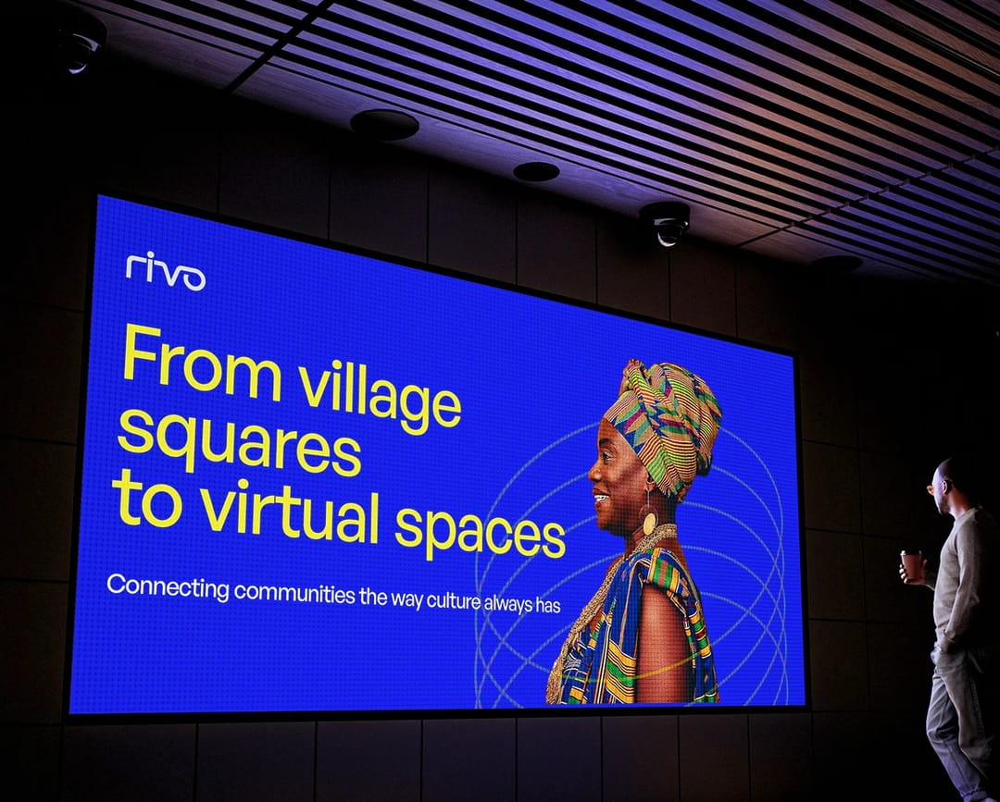
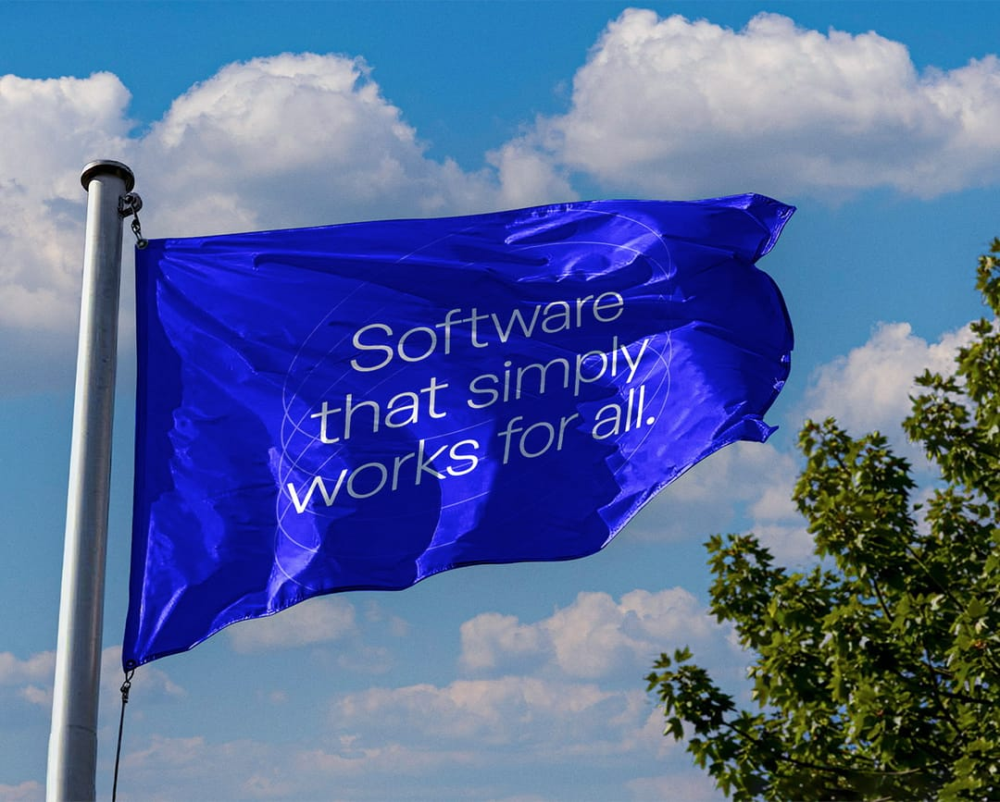
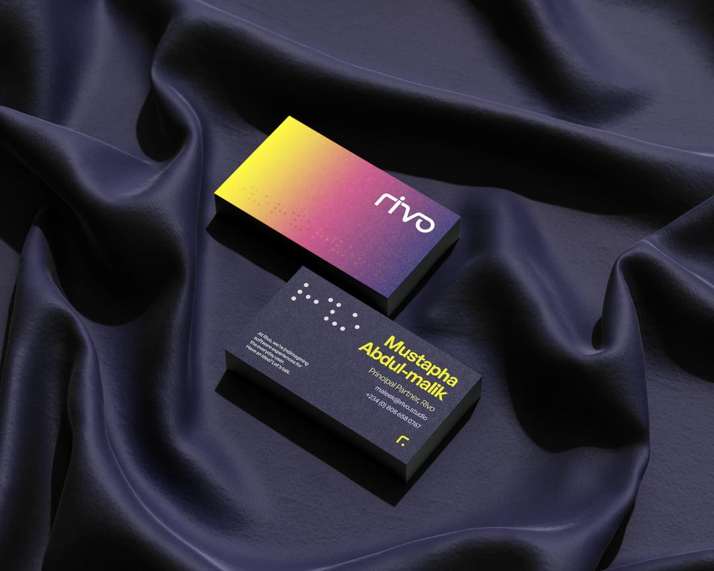
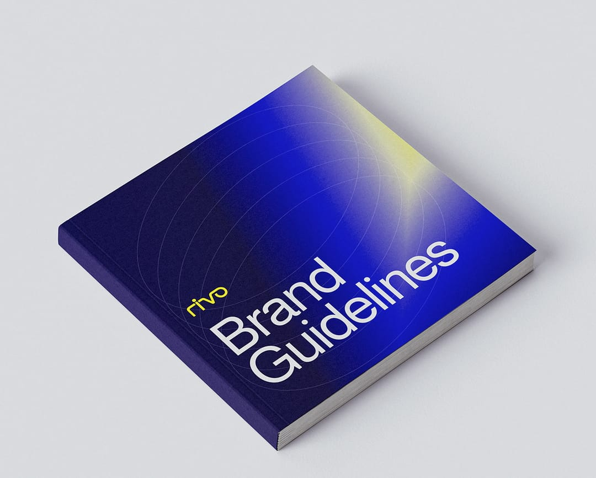

Rivo Studio
A software studio positioned around access, built to feel useful before it feels technical.

A campaign application pairs the signal-yellow wordmark with an everyday technology scene.
- Context
- In-house identity work at Rivo Studios
- My role
- Brand strategy, identity design and guidelines
- Year
- 2025
- Deliverables
- Identity system and rollout
Evidence ledger
What this case can prove
decision
Access became the organising idea, expressed through an open, softened wordmark rather than a clinical technology code.
system
The wordmark, Clar blue field, signal yellow and guidelines form a deliberately limited identity kit.
survival
Application visualisations test the system from stationery to carried and environmental formats; they do not prove production.
Bounded evidence
01 / Question
How can access feel like a brand position?
Rivo Studio needed an identity for a software practice positioned around access. The work had to make that intention visible in the brand itself, rather than leave it as a statement beside the design.
The category often uses complexity as shorthand for capability. Rivo needed to communicate technical confidence while remaining clear, approachable and useful across everyday brand materials.
02 / Governing decision
Soften the technical signal
I worked from the spoken name, /ˈraɪvoʊ/, then tested how it behaved at small sizes, in strong colour pairings and beside practical information.
The wordmark removes hard corners and keeps the letterforms open. Its job is to feel assured without becoming severe, giving the studio a recognisable voice before supporting graphics are added.

The softened Rivo wordmark shown on the identity's signal-yellow field.
03 / System
One primary field, one signal colour
Clar blue anchors the identity against deep navy. Signal yellow is reserved for emphasis, allowing hierarchy to come from a controlled contrast rather than a growing collection of accents. The guidelines record how the wordmark, colour and typography work together.

Clar blue and its tint range form the primary colour family.
04 / System in use
Stress-test one limited vocabulary across scales
Application visualisations tested the system from a carried object to a large environmental surface. The same short proposition and yellow signal had to remain legible without turning every touchpoint into the same composition.
The delivered system included guidelines and stationery alongside the identity assets. These plates show the intended production system and presentation of those materials; they are not presented as evidence of later team adoption.

A tote visualisation tests the proposition as a single carried message.

A stage-screen visualisation tests the system at environmental scale.

A flag visualisation checks the short proposition and wordmark against a moving outdoor format.

A stationery visualisation tests the identity at a small, information-heavy scale.

The guidelines visualisation presents the system as a reference another person can use.
05 / What survived
Usefulness needs restraint
The strongest part of the system is its limited vocabulary. A softened wordmark, a stable blue field and one signal colour create enough distinction while leaving room for the information each application needs to carry.
Next project
TEDx Rivers State University